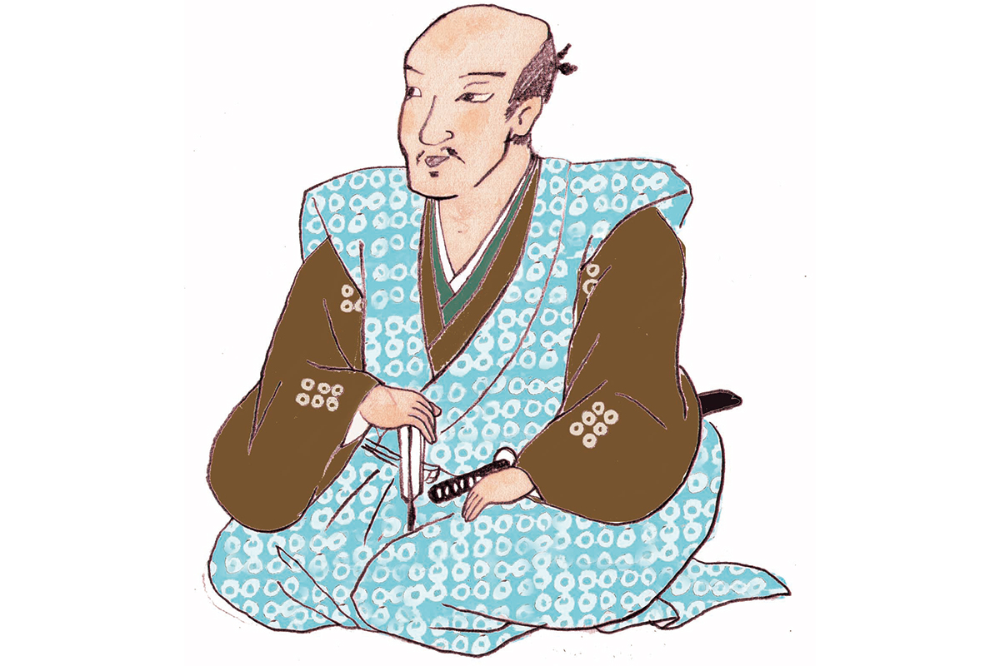
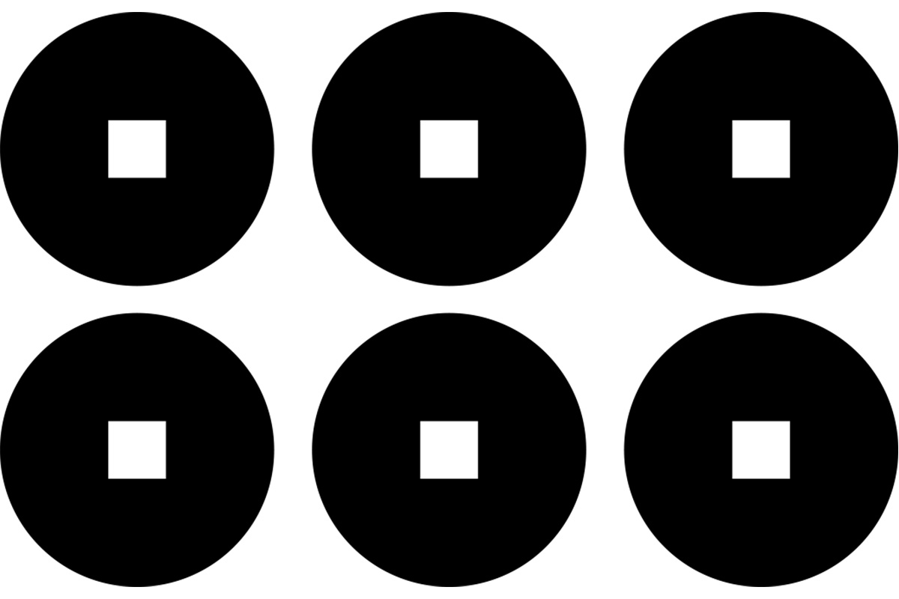
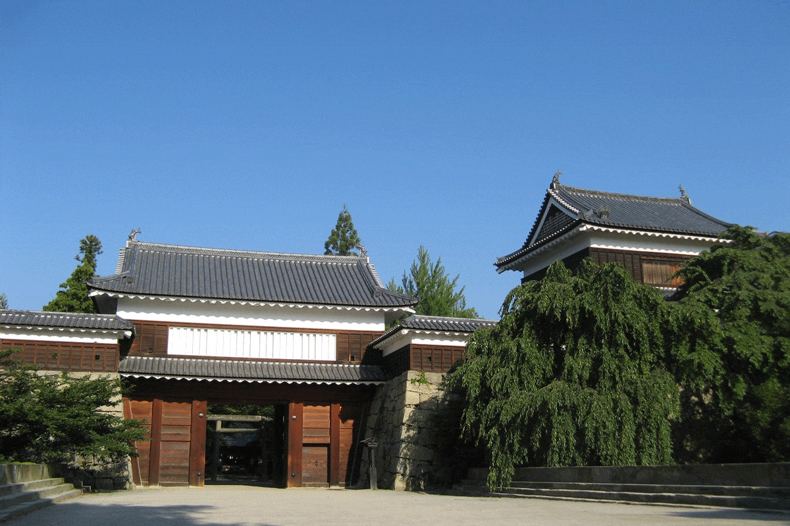

Префектура Нагано · Уэда · история
Юкимура Санада: тихий самурай из Синано, которого уважал даже Иэясу Токугава

Юкимура Санада из провинции Синано, нынешней префектуры Нагано, воин, который до конца остался верен дому Тоётоми, и по сей день один из самых любимых героев японской истории.
Эпоха
Время сражающихся провинций
В конце XV века власть сёгуната Муромати окончательно рухнула, и место прежних наместников по всей стране заняли местные военные правители. Почти сто лет они воевали друг с другом за земли и влияние. Этот век японцы называют эпохой Сэнгоку, «эпохой воюющих провинций», и именно он дал больше всего полководцев, ставших героями легенд.
Юкимура Санада прожил с 1567 по 1615 год и родился в провинции Синано. Настоящее его имя Нобусигэ Санада, но широко он известен как Юкимура. В детстве его звали Бэммару, а приняв монашество, он взял имя Кохаку. Род Санада происходит от рода Муто. Женой Нобусигэ стала дочь Ёсицугу Отани, полководца на службе у Хидэёси Тоётоми.

Судьба
Верность дому Тоётоми
В 1575 году его отец, Масаюки Санада (1547–1611), возглавил род: оба старших брата Масаюки погибли в битве при Нагасино. В 1585 году Санада сражались с Токугавой в первой битве за Уэду, а юного Нобусигэ отдали заложником роду Уэсуги.
В 1587 году его отправили в Осаку, уже заложником к Хидэёси Тоётоми (1537–1598), правителю, который в конце XVI века объединил Японию. Тогда же он и женился. Первый бой Нобусигэ принял в 1590 году, в походе Хидэёси, а в 1594 году получил придворный ранг.
В 1600 году страна раскололась перед битвой при Сэкигахаре. Нобусигэ с отцом встали на сторону Западной армии, верной дому Тоётоми, а после победы Иэясу Токугавы (1543–1616), будущего основателя сёгуната Эдо, оба были сосланы в Кудояму, горную деревню на западе Японии. В 1612 году Нобусигэ принял постриг.
Последняя битва в Осаке
В 1614 году отношения Токугава и Тоётоми окончательно испортились. Поводом стала надпись на колоколе храма Хоко-дзи в Киото, которую Токугава сочли оскорбительной. Дом Тоётоми отправил к Нобусигэ гонца, и тот явился в замок Осака. Во время зимней и летней осады Осаки он стал одним из главных военачальников армии Тоётоми.
В летней кампании 1615 года Нобусигэ смело атаковал войска Иэясу. Он бросил в сторону врага насмешку.
«Восточных воинов миллион, а мужчины ни одного»
Нобусигэ Санада
Он хотел сказать: в огромном войске Токугава нет ни одного настоящего храбреца. В том же бою, когда он ухаживал за раненым товарища, на него напали, и Нобусигэ погиб на 49-м году жизни.
Легенда
Предводитель десяти храбрецов
После смерти Юкимура стал народным героем. Его прославляли как вождя «десяти храбрецов Санады», отряда ниндзя, и как человека, который всю жизнь хранил верность дому Тоётоми. Он стал главным героем множества кодан, устных повестей, которые исполняли профессиональные рассказчики.
Его ценил и сам противник. По преданию, Иэясу говорил, что на том свете первым делом хотел бы выпить с Нобусигэ сакэ. При этом в жизни Нобусигэ совсем не походил на грозного воина: его вспоминали как человека мягкого и терпеливого, обычно молчаливого, который почти никогда не сердился.
Где увидеть
Замок Уэда, твердыня рода Санада
Опорой рода Санада был замок Уэда в одноимённом городе на востоке префектуры Нагано. Его начал строить Масаюки Санада в 1583 году. Замок дважды выдержал натиск армии Токугава: в 1585 году около 2000 воинов Санады отбили около 7000 нападавших, а в 1600 году Масаюки и Нобусигэ заперлись в крепости и задержали отряд в 38 000 человек, который шёл к Сэкигахаре. После поражения Западной армии замок сдали и разрушили.
На месте замка разбит парк. В 1994 году по старым фотографиям и данным раскопок восстановили ворота Хигаси-когути с двумя башнями по бокам. Из старых башен до наших дней дошла только западная. Внутри главной цитадели сохранился колодец Санада: по легенде, из него вёл тайный ход к горе Таро на севере.

В парке стоит святилище Санада. Раз замок так и не пал, его называют «замком, который не падает», и в святилище приходят просить удачи на экзаменах и в состязаниях.
До Уэды можно доехать на туристическом поезде «Рокумон» компании Shinano Railway: его облик придуман по мотивам рода Санада, а имя «шесть монет» взято от родового герба (о поезде отдельная статья).
Парк на месте замка Уэда
- Адрес
- префектура Нагано, город Уэда, Ниномару
- Телефон
- +81 268-23-5408 (отдел туризма города Уэда)
- Как добраться
- от станции Уэда пешком около 12 минут